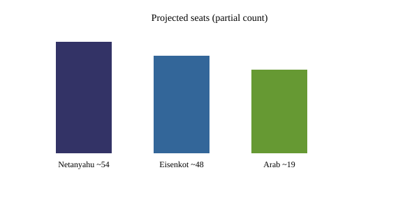

Israel · election · 28 October 2026
Netanyahu’s bloc leads the Israeli election count but no majority emerges after 77.7 percent turnout.
.jpg)
What is agreed across desks
Israel held its first national election since the 7 October 2023 Hamas attack. Polling stations closed on 27 October. By the morning of 28 October, with roughly 70 percent or more of ballots counted, Israeli media and the Central Elections Committee data projected Benjamin Netanyahu’s bloc of Likud and right-wing/ultra-Orthodox allies at approximately 54 seats, the opposition bloc led by Gadi Eisenkot at about 48 seats, and parties representing Arab citizens at about 19 seats in the 120-seat Knesset. Turnout reached 77.7 percent, the highest in more than two decades. Reuters, AP, BBC and local outlets agree that neither the governing nor the opposition Jewish bloc has a clear path to the 61 seats required for a majority without some form of support from Arab parties, which several leaders have previously ruled out.
Netanyahu remains prime minister in a caretaker capacity while the president consults party leaders and one is given the first chance to form a government. Final official results are expected later; coalition negotiations can take weeks and may fail, leading to another election. Likud is projected as the largest single party.
What is only a quote
Netanyahu called for a right-wing government and said the results showed strength among Israeli Jews. Eisenkot said voters had rejected Netanyahu and that the public had voted for change. President Trump said his endorsement had turned the tide. These are statements by the principals. They are not independent measurements of why individual voters chose one list over another. Arab party leaders indicated openness to talks with the opposition; that is also a statement of intent, not a completed deal.
Mechanism a reader needs
Israel’s electoral system is national proportional representation with a 3.25 percent threshold. Seats are allocated by the Bader-Ofer method. Because many parties sit near the threshold, small shifts in the last percentages of the count can move seats. The president assigns the first mandate to form a government to the leader with the best chance of assembling 61 seats; if that attempt fails, another may be tried. If none succeeds, new elections are called. Netanyahu has been Israel’s longest-serving prime minister. The 2023–2026 wars with Hamas, Hezbollah and Iran raised turnout and sharpened the cleavage between those who credit him for security gains and those who hold him responsible for the 7 October failures and subsequent costs.
Arab citizens of Israel make up roughly 21 percent of the population. Their parties have historically been outside governing coalitions. A government that relies on them would be a break with recent practice on the right and would require explicit agreements on issues ranging from security policy to budgets. The partial counts so far do not show either Jewish bloc reaching 61 on its own. That arithmetic is the checkable constraint on government formation.
What this story is not
It is not a final certified result. It is not evidence that Trump’s endorsement caused a specific number of additional votes. It is not a prediction of whether a government will form or whether new elections will be required. The photograph above is a 2018 exterior of the Knesset building; it is not election-night footage.

Source articles and scores
Images: Wikimedia Commons type photograph of the Knesset exterior. Caption states it is not election-night material. onerror falls back to committed SVG. No news-agency pixels used as the sole source.